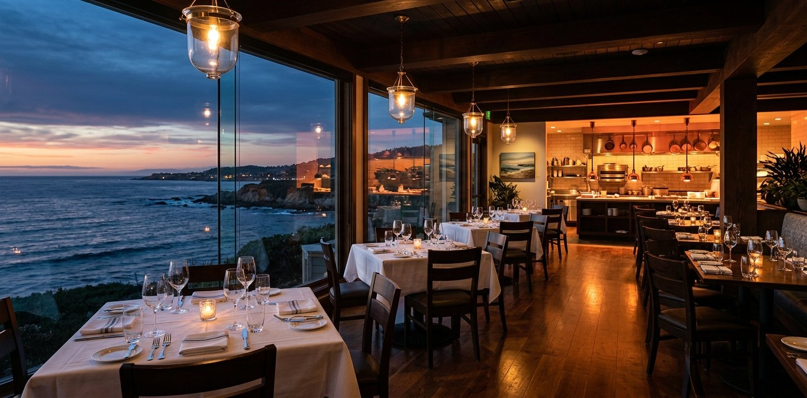

Six-Location Restaurant Group — Financial Discipline
Six locations on California's Central Coast, growth through execution and reputation but no financial infrastructure. Each location operated independently with inconsistent reporting.
The Challenge
This restaurant group had grown to six locations on California's Central Coast through great food, strong execution, and a well-earned reputation. But the financial side hadn't kept pace. Each location operated as its own island — different reporting formats, different chart of accounts, different definitions of basic metrics like food cost and labor percentage.
The ownership group couldn't compare locations, couldn't identify which units were carrying which, and had no framework for evaluating expansion opportunities. Growth was happening despite the financial function, not because of it.
What We Built
Standardization & Visibility
We unified reporting across all six locations with a consistent chart of accounts, standardized definitions, and a comparative analysis framework. For the first time, ownership could see apples-to-apples performance across the entire group and identify where to focus attention.
Operational Controls
We implemented food and labor cost controls at the location level and centralized purchasing where it made sense. The multi-location KPI dashboard tracked the metrics that drive restaurant profitability:
- Covers per labor hour
- Labor percentage by location
- Food cost percentage with variance tracking
- Contribution margin by location
Managers at each location had visibility into their own numbers and how they compared to the group, creating healthy accountability.
Financial Planning
With clean financials in place, we could support strategic decisions with real data:
- New location expansion models — build-out costs, ramp timelines, and break-even analysis
- Seasonal cash flow analysis specific to coastal hospitality patterns
- Reserve requirements for multi-location operations
- Clean financials packaged for bank lending on expansion
Engagement Model
Bi-weekly on-site rotation across locations plus monthly ownership reviews. This cadence kept us close to operations while giving the ownership group consistent strategic visibility.
Central Coast Hospitality Expertise
This engagement is representative of the kind of work we do with hospitality and restaurant groups on California's Central Coast. Mainstreet IQ is based in the region and provides fractional CFO services in Santa Barbara County and fractional CFO services in San Luis Obispo County — including multi-location restaurant groups, hospitality operators, and seasonal tourism businesses that face the same financial challenges described in this case study.